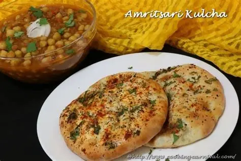
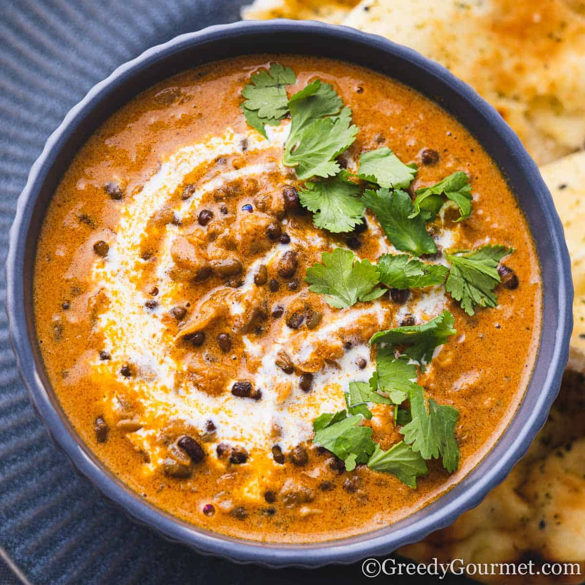
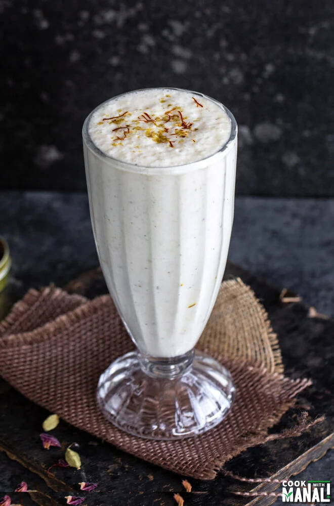
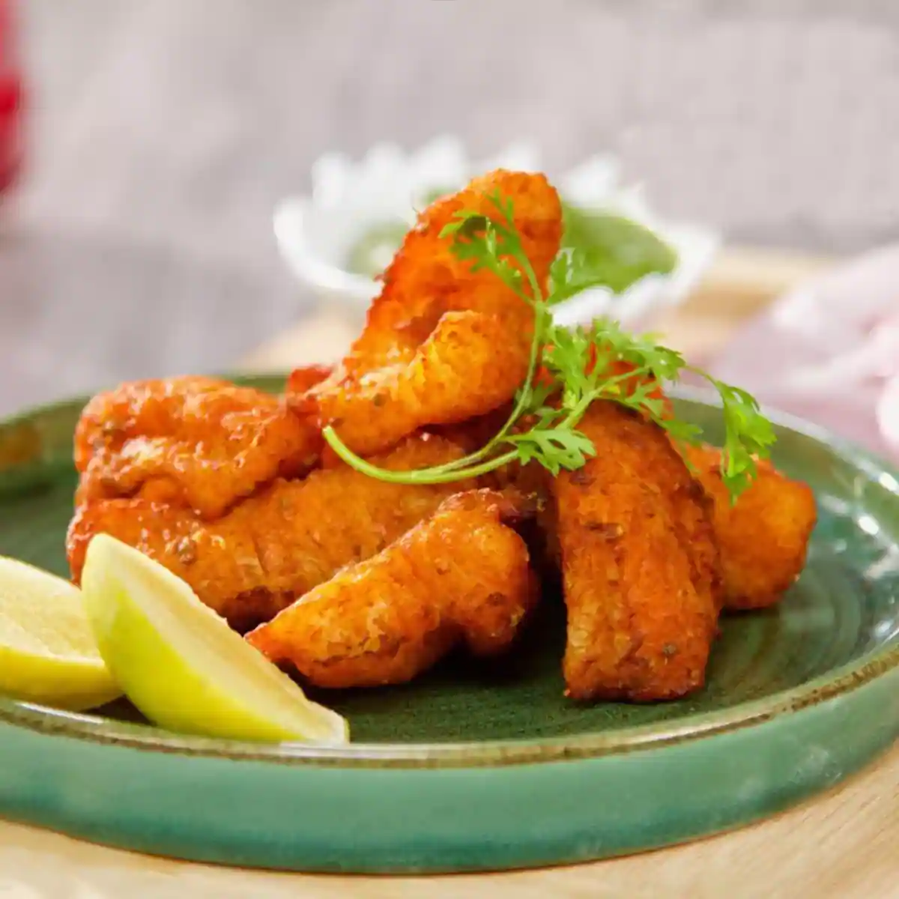
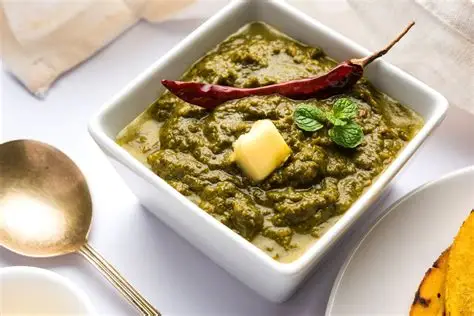
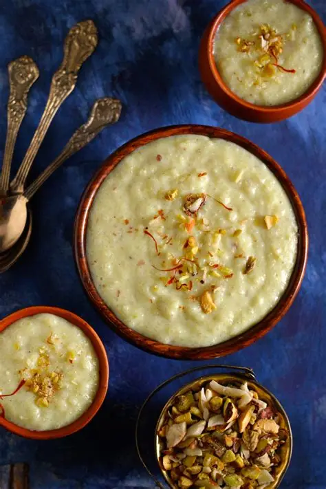

Crispy, layered flatbread stuffed with spiced potatoes and baked in a tandoor. It's served with a dollop of butter, chole, and tangy chutney.

A rich, creamy lentil dish slow-cooked overnight with butter and cream. It is the heart of every Punjabi meal and famous at Kesar Da Dhaba.

A thick, frothy yogurt drink served in large steel tumblers, often topped with a thick layer of malai (cream). It is the ultimate Punjabi refresher.

Fresh river fish coated in a spicy gram flour batter and deep-fried to golden perfection. It is a crispy and juicy world-famous snack.

A traditional winter delicacy made from mustard greens and spices, traditionally served with 'Makki di Roti' and white butter.

A creamy ground rice pudding flavored with saffron and cardamom, served chilled in traditional clay pots (matkas) for an authentic taste.